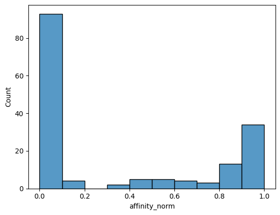
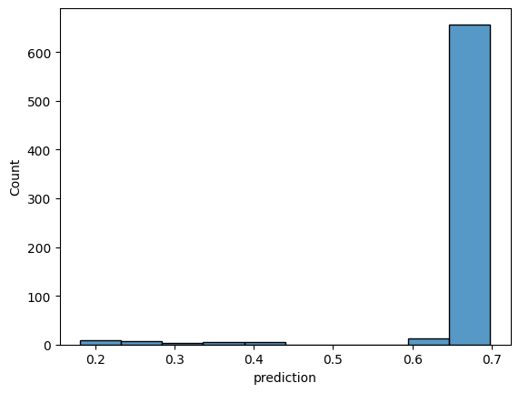
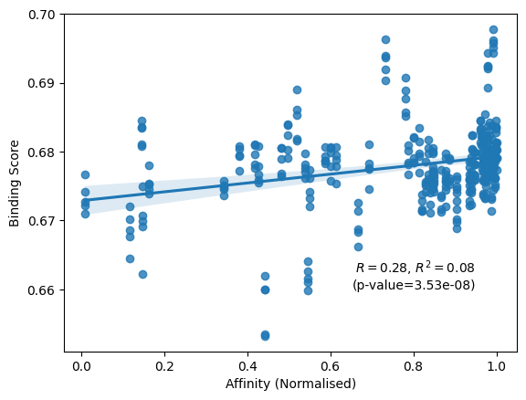
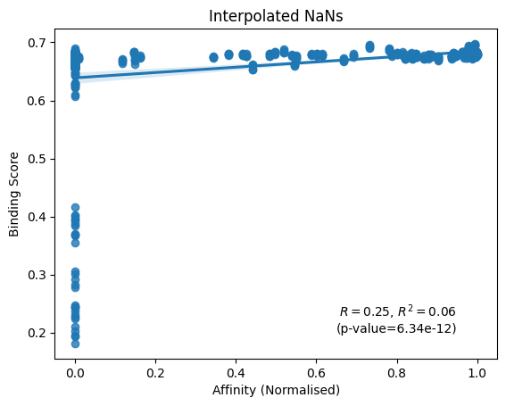
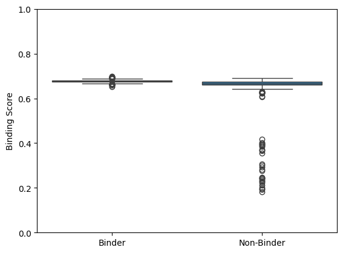
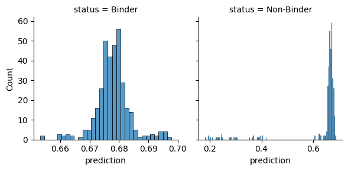

Correlation between affinity and binding scores for c259 TCR binding peptide mutants
[1]:
import os
import subprocess
import tempfile
import matplotlib.pyplot as plt
import numpy as np
import pandas as pd
import pingouin as pg
import seaborn as sns
from scipy.stats import pearsonr
[2]:
AFFINITY_CUTOFF = 100 # uM
[3]:
sequences = pd.read_csv('../data/interim/sequences_c259_mutational_scan_affinity.csv', index_col='id')
sequences = sequences.drop_duplicates('peptide')
[4]:
sequences['affinity_norm'] = np.clip(
(
(AFFINITY_CUTOFF - sequences['geometric_mean'].fillna(AFFINITY_CUTOFF))
/ (AFFINITY_CUTOFF - sequences['geometric_mean'].min())
),
a_min=0,
a_max=1,
)
[5]:
sns.histplot(sequences, x='affinity_norm', bins=10)
plt.show()

[6]:
NETMHCPAN_BINDER_CUTOFF = 2.0
[7]:
with tempfile.TemporaryDirectory() as temp_dir:
input_name = os.path.join(temp_dir, 'peptides.fasta')
with open(input_name, 'w') as fh:
fh.writelines(f'>{id_}\n{sequence}\n' for id_, sequence in sequences['peptide'].to_dict().items())
output_name = os.path.join(temp_dir, 'out.tsv')
subprocess.run( # noqa: S603
['/usr/bin/env', 'netMHCpan', '-xls', '-xlsfile', output_name, '-a', 'HLA-A02:01', input_name],
check=True,
stdout=subprocess.DEVNULL,
)
netmhcpan_predictions = pd.read_csv(output_name, delimiter='\t', comment='#', header=1)
netmhcpan_predictions.columns = [column_name.lower() for column_name in netmhcpan_predictions.columns]
netmhcpan_predictions['id'] = netmhcpan_predictions['id'].replace('c259_original_9', 'c259_original_9V')
netmhcpan_predictions = netmhcpan_predictions.set_index('id')
sequences = pd.concat([sequences, netmhcpan_predictions[['el_rank']]], axis=1)
[8]:
to_be_screened = set(
sequences[sequences['geometric_mean'].isna() & (sequences['el_rank'] > NETMHCPAN_BINDER_CUTOFF)].index
)
print(
'IDs to be remove as they have no affinity and are not reported binders by NetMHCpan:\n\n\t-',
'\n\t- '.join(to_be_screened),
)
IDs to be remove as they have no affinity and are not reported binders by NetMHCpan:
- c259_2A
- c259_9N
- c259_2E
- c259_2D
- c259_1P
- c259_9R
- c259_9T
- c259_2N
- c259_9Y
- c259_9E
- c259_2K
- c259_9P
- c259_2G
- c259_2H
- c259_9G
- c259_9K
- c259_2R
- c259_2S
- c259_9S
- c259_2F
- c259_9H
- c259_9D
- c259_2P
[9]:
non_binders = set(sequences[sequences['el_rank'] > NETMHCPAN_BINDER_CUTOFF].index)
print('IDs not reported to bind from NetMHCpan but have affinity data:', ', '.join(non_binders - to_be_screened))
IDs not reported to bind from NetMHCpan but have affinity data: c259_2W, c259_2Y, c259_9Q, c259_9F, c259_9W, c259_1D, c259_6W
[10]:
no_affinity = set(sequences[sequences['geometric_mean'].isna()].index)
print("IDs that don't have affinity data but are pMHC binders:\n\n\t-", '\n\t- '.join(no_affinity - to_be_screened))
IDs that don't have affinity data but are pMHC binders:
- c259_2T
- c259_3D
- c259_3K
- c259_5P
- c259_1M
- c259_8N
- c259_3E
- c259_3G
- c259_3P
- c259_8P
- c259_1E
- c259_3R
- c259_9M
[11]:
sequences_remove_non_binders = sequences[~sequences.index.isin(to_be_screened)]
[12]:
binding_scores = pd.read_csv(
'../data/processed/af3_af3_tcrmodel2_c259_mutational_scan_affinity_pae_aggregator_predictions.csv'
)
binding_scores['prediction'] = binding_scores[
['prediction_1', 'prediction_2', 'prediction_3', 'prediction_4', 'prediction_5']
].apply('median', axis=1)
binding_scores = binding_scores.merge(sequences_remove_non_binders, how='inner', left_on='name', right_index=True)
[13]:
sns.histplot(binding_scores, x='prediction', bins=10)
plt.show()

[14]:
ax = sns.regplot(binding_scores[binding_scores['affinity_norm'] > 0.00], x='affinity_norm', y='prediction')
r, p_val = pearsonr(
binding_scores.loc[binding_scores['affinity_norm'] > 0.00, 'affinity_norm'],
binding_scores.loc[binding_scores['affinity_norm'] > 0.00, 'prediction'],
alternative='greater',
)
ax.text(0.95, 0.66, f'$R={r:.2f}$, $R^2={r**2:.2f}$\n(p-value={p_val:.2e})', ha='right')
ax.set_ylabel('Binding Score')
ax.set_xlabel('Affinity (Normalised)')
plt.show()

[15]:
ax = sns.regplot(binding_scores, x='affinity_norm', y='prediction')
r, p_val = pearsonr(binding_scores['affinity_norm'], binding_scores['prediction'], alternative='greater')
ax.text(0.95, 0.2, f'$R={r:.2f}$, $R^2={r**2:.2f}$\n(p-value={p_val:.2e})', ha='right')
ax.set_ylabel('Binding Score')
ax.set_xlabel('Affinity (Normalised)')
ax.set_title('Interpolated NaNs')
plt.show()

[16]:
binding_scores['status'] = 'Binder'
binding_scores.loc[binding_scores['geometric_mean'].fillna(AFFINITY_CUTOFF) >= AFFINITY_CUTOFF, 'status'] = 'Non-Binder'
[17]:
ax = sns.boxplot(binding_scores, y='prediction', x='status')
ax.set_ylim(0, 1)
ax.set_xlabel('')
ax.set_ylabel('Binding Score')
plt.show()

[18]:
grid = sns.FacetGrid(binding_scores, col='status', sharex=False)
grid.map_dataframe(sns.histplot, x='prediction')
plt.show()

[19]:
pg.ttest(
binding_scores.query("status == 'Binder'")['prediction'],
binding_scores.query("status == 'Non-Binder'")['prediction'],
alternative='greater',
)
[19]:
| T | dof | alternative | p-val | CI95% | cohen-d | BF10 | power | |
|---|---|---|---|---|---|---|---|---|
| T-test | 7.363817 | 346.049597 | greater | 6.587952e-13 | [0.03, inf] | 0.564682 | 2.4e+10 | 1.0 |